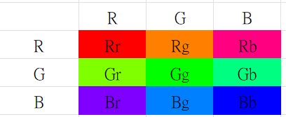

CCM (Color Correction Matrix, 色彩校正矩陣)
在相機 ISP (Image Signal Processor) 流程中是非常關鍵的一步，它決定了影像最終呈現出來的色彩風格是否準確、討喜。
簡單來說，感光元件（Sensor）"看到"的顏色，和人眼"看到"的顏色是不一樣的。CCM 的作用就是充當一個「翻譯官」，把 Sensor 抓到的原始 RGB 數值，轉換成符合人類視覺標準（例如 sRGB 色域）的 RGB 數值。
1. CCM 的核心概念與公式
CCM 本質上是一個 3x3 的線性代數矩陣。它透過矩陣乘法，將輸入影像的每一個像素的 R、G、B 三個通道的值重新混合，計算出新的 R、G、B 值。
數學公式
假設輸入像素的顏色向量是
，
輸出像素的顏色向量是
Rin Gin Bin
，
而 CCM 矩陣為 Rout Gout Bout M：
| Crr | Crg | Crb |
| Cgr | Cgg | Cgb |
| Cbr | Cbg | Cbb |
那麼校正過程就是：
| Rout |
| Gout |
| Bout |
| Crr | Crg | Crb |
| Cgr | Cgg | Cgb |
| Cbr | Cbg | Cbb |
| Rin |
| Gin |
| Bin |
展開來看，新的紅色通道 Rout 是由原本的 R, G, B 按比例混合而成的：
2. CCM 影像調整流程
2.1 準備工作
- 拍攝設備：架設好相機或鏡頭模組，確保在標準光源（如 D65、A 光源）下進行。
- 測試卡：使用標準色彩測試卡（例如 Imatest 常搭配的 Colorchecker 色卡）。
- 前置處理：確保已完成黑準（BLC）與白平衡（AWB）校正，白平衡正確後才能調校 CCM。
2.2 調整步驟
- 擷取 Raw 影像：在標準燈箱下拍攝色卡，取得未加工的原始 RAW 圖像數據。
- 設定初始矩陣：將 CCM 參數重設為單位矩陣（對角線為 1，其餘為 0），先確保不干擾原始畫面。
- 擷取色塊數值：分析色卡上各個色塊的實際拍攝 RGB 值，並對比標準色卡的標準色值。

圖 1：24 色標準色卡 (Colorchecker)
- 計算校正矩陣：利用最小平方法（Least Squares Method）等演算法，計算出能將實際顏色轉換到目標值的 3 × 3 矩陣係數。
- 約束條件檢查：套用矩陣時需確保每行係數和為 1（即 R+G+B = 1），以維持白色區域不跑色、不破壞白平衡。
- 微調飽和度：根據主觀視覺或色差指標（如 ΔE），微調矩陣中的飽和度強弱，完成最終燒錄與驗證。
2.3 調整技巧
以下是實務上調整 CCM 矩陣時常見的色彩偏移與對應的調整方向：

圖 2：CCM 矩陣調整示意圖
- 紅偏橘：減小
rg，或增大rb - 紅偏粉：增大
rg，或減小rb - 綠更嫩：減小
gb，同時減小gr - 膚色偏黃：增大
gb - 膚色希望偏紅：減小
br，或增大bg - 黃偏紅：增大
br，或減小bg - 紅色變深：減小
rg，同時減小rb - 黃偏綠 / 藍偏紫：減小
br，或增大bg - 黃偏紅 / 藍偏青：增大
br，或減小bg

圖 3：CCM 色彩調整方向總覽
3. 關鍵特性 (Sam 的小筆記)
- 對角線元素 (Diagonal Elements)：
Crr,Cgg,Cbb通常接近 1.0，代表保留原始通道的主要成分。 - 非對角線元素 (Off-diagonal Elements)： 用來引入其他通道的顏色進行修正。例如
Crg是負值時，表示為了讓紅色更純淨，需要減去一些綠色的成分。 - 白平衡保持 (White Balance Preservation)： 理想情況下，CCM 每一列（Row）的總和應該等於 1（例如
Crr + Crg + Crb = 1）。這樣能確保純白色經過轉換後依然是純白色，不會偏色。 - 線性域操作： 標準的 CCM 運算應該在「線性 RGB 空間」進行。也就是說，輸入影像如果已經經過 Gamma 校正（如常見的 JPG），理論上要先「反 Gamma (De-Gamma)」，做完 CCM 後再乘回 Gamma。
4. Delta E (ΔE) 與 Delta C (ΔC) 的計算
在色彩校正矩陣（CCM）的計算與評估中，Delta E (ΔE) 與 Delta C (ΔC) 是衡量色彩準確度的核心指標。這些指標通常在 CIELAB 色彩空間中計算，透過量化「拍攝值」與「標準參考值」之間的距離來評估校正效果。
4.1 Delta E (ΔE) 的計算方式
Delta E 代表的是兩個色彩在三維色彩空間中的總體感知差異，包含了亮度（L*）與色度（a*, b*）的特徵。
CIE 1976 (ΔE*ab)：最基礎的計算方式
採用歐幾里得距離（Euclidean distance）公式：
其中 L* 為感知亮度，a* 為紅/綠軸，b* 為黃/藍軸。
優化公式
由於人類視覺對不同色調的敏感度不同，簡單的歐氏距離無法完全反應感知差異，因此後續發展出更複雜的加權公式：
- CIE 1994 (ΔE 94)：引入加權因子，提高了在強烈色彩下的感知相關性。
- CIEDE2000 (ΔE 00)：目前的黃金標準，針對人眼對色相感應的非線性（如藍色區域與皮膚色調）進行了修正。
4.2 Delta C (ΔC) 的計算方式
Delta C 僅衡量色度差異，忽略了亮度（L*）的影響。
基礎計算公式：即在 a*b* 平面上的幾何距離：
飽和度校正（Saturation Correction）：在 CCM 調校中，有時會計算「飽和度校正後」的 ΔC。這會先將測量到的飽和度標準化為與參考值相同，以排除相機人為提升飽和度（使畫面變豔麗）所帶來的誤差，進而觀察純粹的色彩準確性。
4.3 CCM 調校中常用的標準與指標
CCM 的優化目標通常是使測試圖卡（如 24 色卡）中各色塊的平均平方色彩誤差最小化。
專業軟體（如 Imatest）強烈建議使用 ΔE2000 或 ΔE94 作為優化指標，因為它們比基礎的 ΔEab 更接近人眼的實際視覺感受。
誤差數值標準：
- ΔE = 0：完全無差異（理想狀態，現實中極難達成）。
- ΔE < 1：肉眼幾乎無法察覺差異。
- ΔE ≤ 2：專業顯示器與高精度要求的色彩重現標準。
- ΔE = 3 ~ 6：商業印刷與一般影像重現可接受的範圍。
典型相機表現：標準三色（RGB）感測器經過 CCM 校正後，最小平均 ΔE2000 通常落在 3 左右。
4.4 應用限制
需注意的是，CCM 本質上是一種線性變換，而人眼與感測器的光譜靈敏度並不完全一致，因此無法達到完美的零誤差。在優化過程中，通常會設定「行總和為 1」的約束條件，以確保校正色彩的同時不會破壞既有的白平衡（即確保 R=G=B 的輸入在校正後依然 R' = G' = B'）。
5. ISP 中 CCM 的動態調節邏輯
在圖像信號處理（ISP）管線中，色彩校正矩陣（CCM）的動態調節邏輯是為了應對現實世界中多變的光照環境、色溫及場景內容，確保相機能在各種條件下還原出準確且符合主觀美感的色彩。
以下是 CCM 動態調節的核心邏輯與機制：
5.1 核心邏輯：自動白平衡（AWB）連動機制
CCM 的調節通常與 AWB 模組緊密連動，這是動態調節中最基礎且最重要的部分。
- 多色溫標定（Multi-CCT Calibration）：在調校階段，工程師會針對數個標準光源（例如：D65 晴天、TL84 螢光燈、A 光源白熾燈）分別計算出對應的固定 CCM 矩陣。
- 權重內插（Interpolation）：當相機運行時，AWB 會計算出當前環境的相關色溫（CCT）。若當前色溫處於兩個標定光源之間，ISP 會根據權重對這兩組 CCM 矩陣進行線性內插計算，動態生成最適合當前光學環境的矩陣。
5.2 環境亮度與增益調節（Luma/Gain Adaptive）
為了平衡色彩表現與影像噪點，CCM 會根據光照強度動態調整：
- 低照度抑制：在光線不足（Low Light）的環境下，為了避免 CCM 放大感測器的原始噪點，ISP 可能會動態降低 CCM 的飽和度係數（縮小矩陣非對角線的值），以犧牲部分色彩鮮豔度來換取更純淨的畫面。
- 高動態範圍（HDR）適配：在 HDR 模式下，不同曝光權重的區域可能需要不同的色彩補償處理。
5.3 色溫分區與場景保護策略
單一的線性內插有時無法處理複雜的混合光源，因此現代 ISP 引入了更細緻的分區邏輯：
- 色溫分區（CCT Zoning）：針對特定色溫區間設定專屬矩陣，避免在暖色燈光下出現人臉過於偏黃或偏紅的問題。
- 膚色保護（Skin Tone Protection）：ISP 會識別影像中的膚色區域，動態微調該區域的色彩向量，確保在改善整體環境色偏時，人臉膚色依然保持自然穩定。
5.4 AI 場景識別與記憶色彩優化
現代智慧型手機 ISP（如高通 QCOM、聯發科 MTK）會結合 AI 演算法進行動態適配：
- 場景適配：當 AI 識別出「綠地」、「藍天」或「夕陽」等場景時，會動態加強矩陣中特定通道的比例，使記憶色彩更加討喜。
- 混合光源處理：在室內外混合光源下，AI 能協助判斷主光源權重，選取更精準的 CCM 補償策略。
5.5 硬體平台實現路徑
在實際工程應用中，不同平台有不同的實現路徑：
QCOM / MTK / HiSilicon：這些主流平台皆支持多組 CCM 參數的動態加載與過渡，並提供圖形化工具讓工程師設定色溫觸發點與平滑過渡曲線，避免畫面在切換光源時出現明顯的「跳色」現象。
總結來說，CCM 的動態調節邏輯是從「基於色溫的線性內插」出發，進一步融合「亮度感應」與「AI 場景識別」的多維度優化過程。
6. CCM 標定的多色溫矩陣如何內插
在 ISP（圖像信號處理）管線中，CCM（色彩校正矩陣）的動態調節主要透過與 AWB（自動白平衡）模組聯動，利用「多色溫標定」搭配「線性內插」來實現。
以下是多色溫矩陣內插的具體實現邏輯：
6.1 標定階段：建立基礎矩陣庫
在實驗室環境下，工程師會使用標準色卡（如 24 色卡）在多種標準光源下進行拍攝與計算。
常見的標定組合包括：
- 三組標定：D50（日光）、TL84（螢光燈）、A 光源（鎢絲燈）。
- 五組標定：10K（高色溫日光）、D65、D50、TL84、A 光源。
針對每一種光源，都會計算出一組最佳化的 3x3 矩陣參數。
6.2 運行階段：AWB 聯動與色溫偵測
當相機實際運行時，系統無法得知精確的光源類型，因此會透過 AWB 模組計算出當前環境的相關色溫（CCT, Correlated Color Temperature）。
6.3 內插邏輯（Interpolation）
當偵測到的色溫介於兩組標定光源之間時，ISP 會根據權重對這兩組 CCM 矩陣的每一個係數進行線性內插，動態生成一組新的矩陣。
數學原理： 假設偵測到的色溫為 T，它落在標定色溫 Tlow 與 Thigh 之間。
矩陣中的 9 個係數（C00 到 C22）均會依照此權重重新組合。
6.4 內插時的約束條件
為了確保內插後的色彩過渡平滑且不產生異常，通常會遵守以下邏輯：
- 保持白平衡：確保內插後的矩陣每一行之總和依然為 1（即
Ci0 + Ci1 + Ci2 = 1），這樣即使在內插過程中，白色區域依然能保持 R=G=B 的特性，不會發生偏色。 - 色溫分區策略：現代 ISP（如高通 QCOM、聯發科 MTK）會設定多個色溫區間點，並提供平滑過渡曲線，防止在光源切換時畫面色彩出現明顯跳變。
6.5 其他影響因素的綜合調整
除了單純的色溫內插，部分 ISP 還會根據曝光增益（Gain）或 AI 場景識別結果來微調內插權重。例如在低照度（高增益）下，可能會動態縮小矩陣非對角線係數的權重，以抑制因色彩校正而放大的噪點。